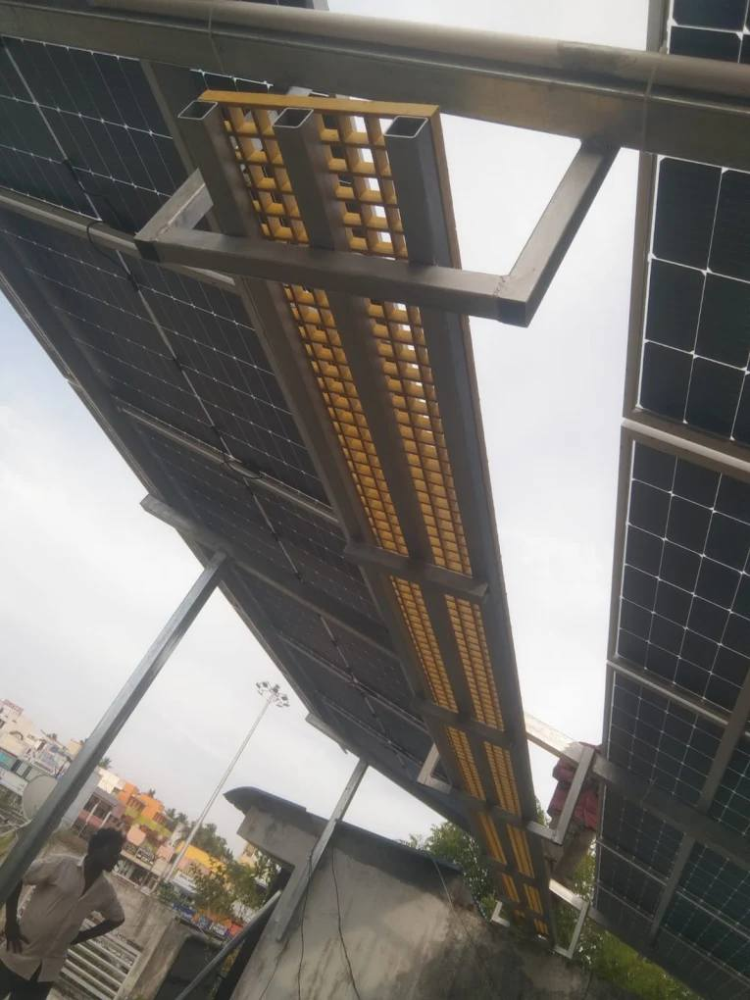

Are darker solar panels better?
It is one of the first things homeowners notice when they compare two quotations: one company's panels look deep black, the other's look blue. The darker set looks more premium, so it must be the better product. In practice, colour tells you very little about how much electricity a panel will produce on your roof or how long it will last.

Why panels look different in the first place
The colour difference usually comes down to the cell technology and the materials behind it, not the quality grade.
- Monocrystalline cells are made from a single silicon crystal and naturally appear black or very dark blue.
- Polycrystalline cells are made from multiple silicon fragments and have the speckled blue appearance.
- Backsheet and frame colour change the look dramatically. A black backsheet and black frame produce the "all-black" panel many people associate with premium products, even when the cells underneath are ordinary.
- Anti-reflective coating alters how light bounces off the glass, which changes the shade you see from the ground.
Monocrystalline panels do tend to be more efficient per square foot, which matters when roof space is tight. But "monocrystalline" is a broad category covering a wide range of quality, and a black frame can be fitted to almost anything.
What to check instead
Wattage and efficiency
Compare the wattage per panel and the efficiency percentage. Two 5 kW systems can need very different amounts of roof area depending on the panel rating. If your terrace is small, higher efficiency is worth paying for. If you have space to spare, it may not be.
Temperature coefficient
This is the one most people skip, and it matters a great deal in Chennai. Panels lose output as they heat up, and a rooftop here gets very hot for much of the year. A lower temperature coefficient means less output lost on a 40°C afternoon. Two panels with identical ratings on paper can behave differently in May.
Degradation and warranty
Look for the performance warranty, which states how much output the manufacturer guarantees after 25 years, and the separate product warranty covering physical defects. Just as important: whether the brand has service support in India. A long warranty from a company you cannot reach is not much use.
Build quality
Check the glass thickness, frame strength, and junction box rating. These decide how the panel copes with heavy monsoon rain, wind, and, near the coast, salt-laden air.
Certification
For subsidy-eligible residential installations, the panels must come from an approved list. Confirm this before you commit, because it affects both your subsidy claim and your ability to get support later.
A practical comparison tip: ask each supplier for the total system wattage, the number of panels, the roof area required, and the expected monthly generation for your location. Comparing those four numbers tells you far more than comparing photographs.
Where the real difference shows up
In our experience, the gap between a system that performs well for years and one that disappoints has less to do with panel colour and more to do with what surrounds the panel: the mounting structure, the wiring, the earthing, and the inverter. A well-chosen panel installed poorly will underperform, and it is the part of the job you cannot see from the street.
We wrote more about that in our video on installation quality, and it is the reason our installation service covers structure, wiring, earthing, and testing as one scope rather than treating them as extras.
The short answer
A darker panel is not automatically a better panel. Judge the specification sheet, the warranty, and the fit with your roof and your consumption. Then judge the company that will install it.
Next step
Not sure which panels suit your roof?
Book a free site inspection and we'll assess your roof area, shading, and electricity usage before recommending a system.